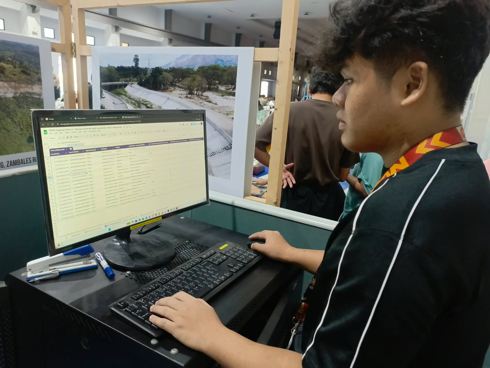
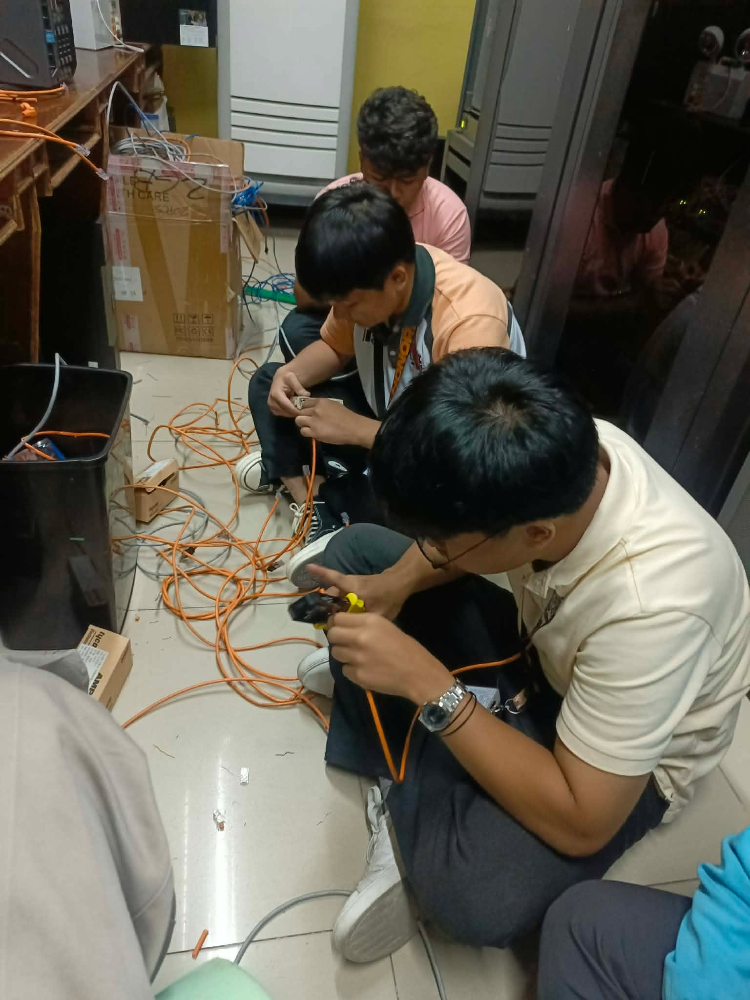
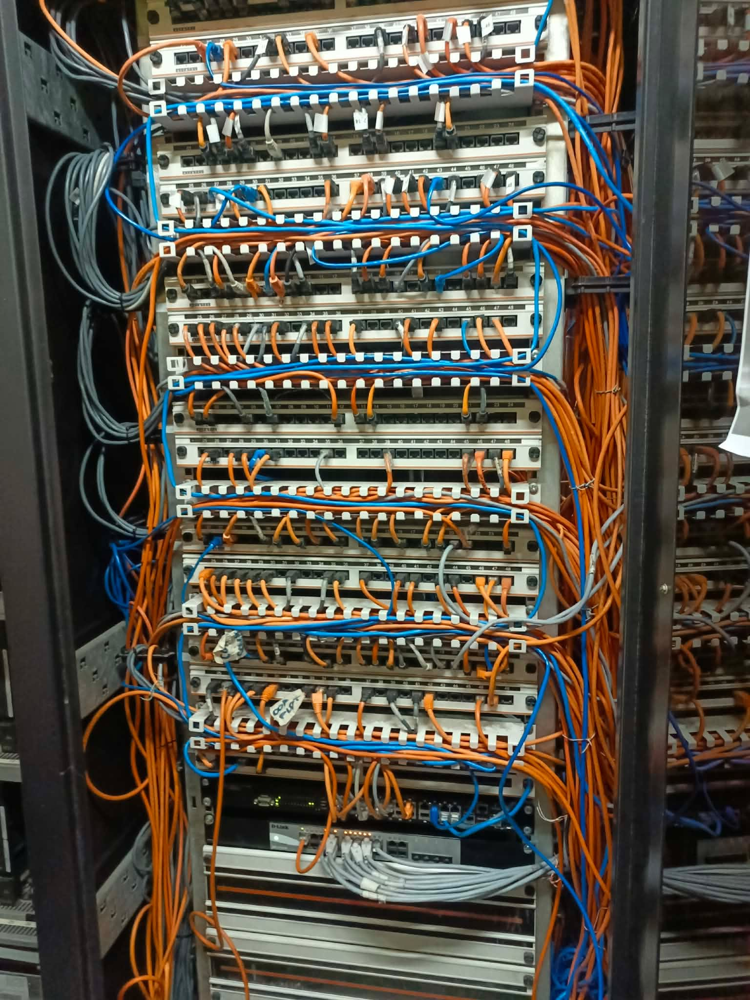
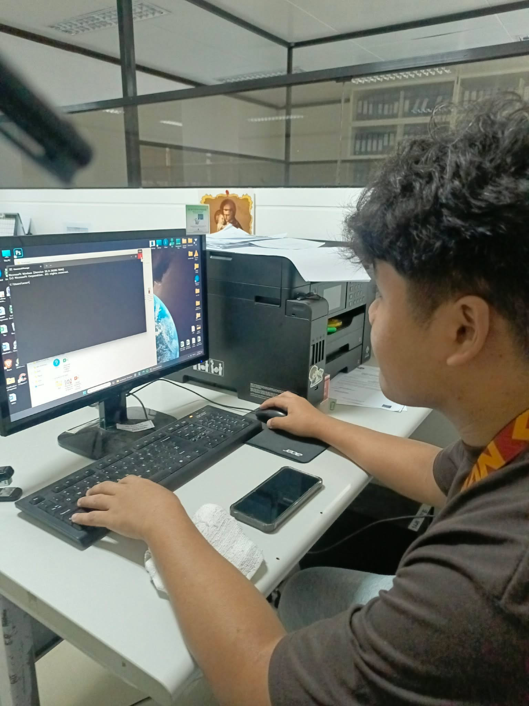
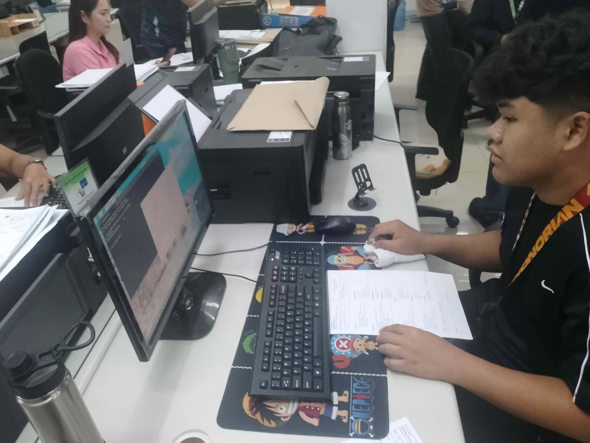
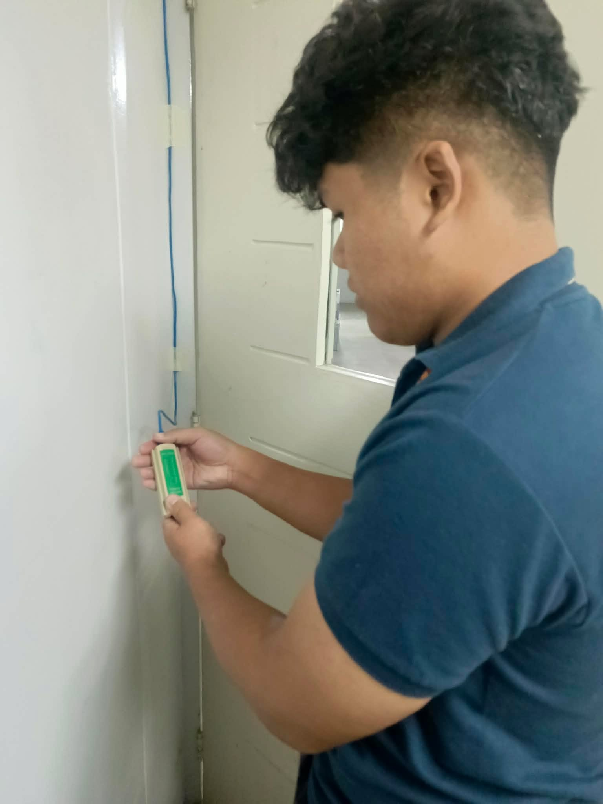
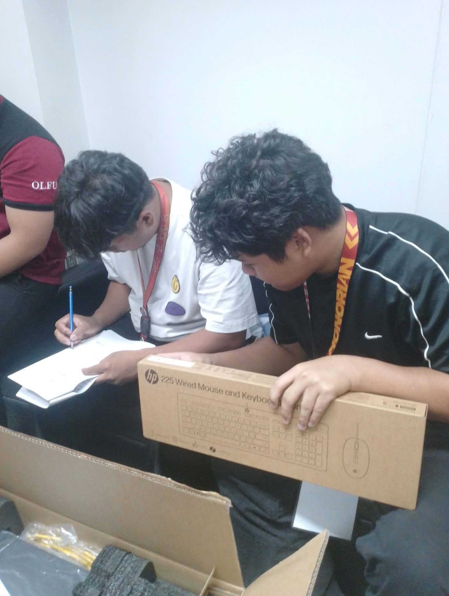
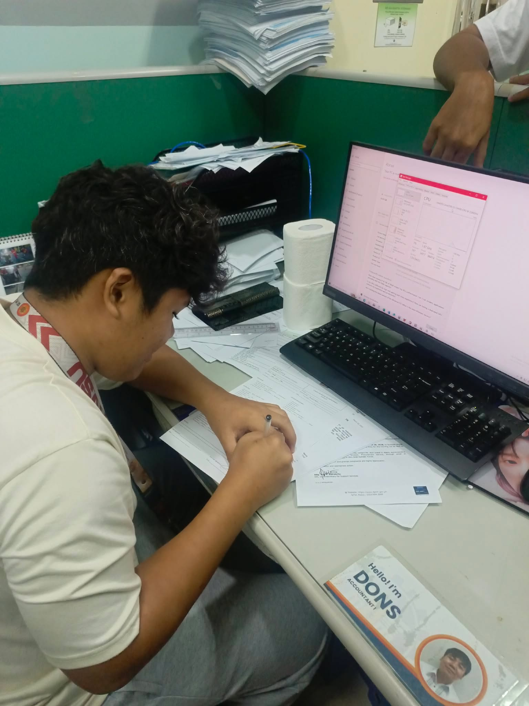
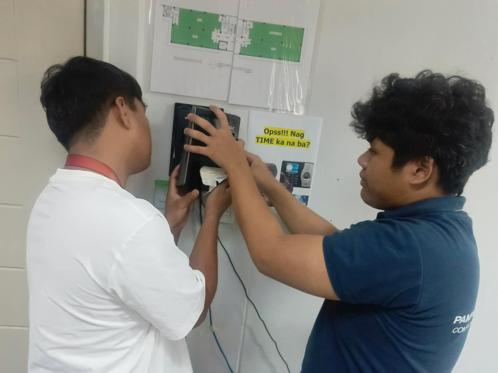

Internship Journal
About the Internship
During my internship at DPWH Region III, I supported the Information Technology team by performing preventive maintenance, basic hardware troubleshooting, and network-related tasks. I assisted in configuring servers, verifying equipment inventories, and ensuring computers and peripheral devices were functioning properly. I also provided technical support during seminars by helping manage audio-visual equipment and presentation setups. Through these responsibilities, I developed a stronger understanding of IT operations, equipment maintenance, problem-solving, and working efficiently within a professional team environment.









Hardware Troubleshooting and Repair
Diagnosed and repaired hardware issues including desktops, laptops, printers, and peripherals. Replaced faulty components such as RAM, hard drives, and power supplies.
Software Installation and Configuration
Installed and configured operating systems, office applications, and specialized software. Ensured all systems were up-to-date with security patches and updates.
Network Maintenance and Support
Assisted in maintaining network infrastructure including routers, switches, and access points. Troubleshot connectivity issues and ensured network stability.
Documentation and Technical Writing
Created and maintained technical documentation for IT procedures, troubleshooting guides, and system configurations. Documented daily tasks and solutions provided.
Staff Technical Support
Provided day-to-day technical support to staff members, resolving issues promptly and professionally. Assisted with software training and system usage queries.
Enterprise IT Infrastructure
Gained hands-on experience with enterprise-level IT systems and infrastructure management.
Professional Communication
Developed professional communication skills in a government setting, interacting with staff at all levels.
Problem-Solving Under Pressure
Learned to diagnose and resolve technical issues quickly and efficiently under time constraints.
Team Collaboration
Worked effectively in a team environment, collaborating with colleagues on complex projects.
This website was vibe coded with ChatGPT, Perplexity and DeepSeekAI
Inspired by Mauricio Juba's 2026 Portfolio